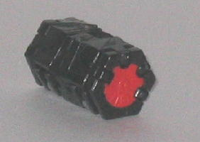
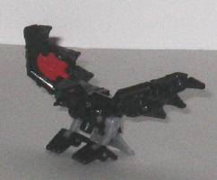
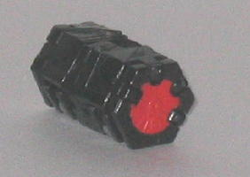
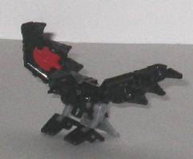
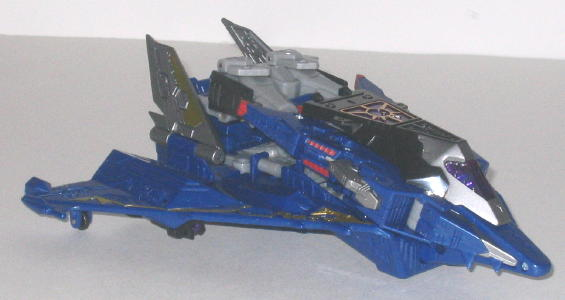
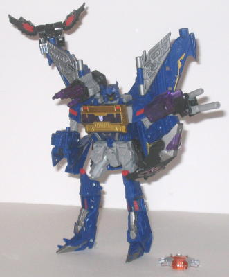

Laserbeak
Laserbeak
 
Allegiance : Minicon according to the package, None according to the show
Size : Mini-Con
Difficulty of Transformation : Very Easy
Color Scheme : Black, and some light red and light milky gray
Rating : 8.2
Laserbeak


Allegiance
: Minicon according to
the package, None according to the show
Size
: Mini-Con
Difficulty of Transformation
: Very
Easy
Color Scheme
: Black, and some light
red and light milky gray
Rating
: 8.2
Laserbeak's alternate
mode, instead of being a tape like his
G1 self
,
is now instead a bomb (though, hopefully, if Laserbeak lands hard on something,
he doesn't explode...). Certainly a fitting alternate mode, given that
Soundwave is now a stealth bomber, and quite a creative change at that.
I was afraid he'd just be a blank rectangle in his alternate mode without
any real use when I first heard that Cybertron Soundwave was going to come
with this guy, but I'm certainly glad I was wrong. Granted, you can't really
DO much with Laserbeak in this mode, but it's still certainly creative.
Personally, I'm absolutely
amazed they managed to give Laserbeak THIS awesome of a bird mode considering
what his alt mode is. It's fantastic, especially for being such a small
scale. His proportions are great, and he's got plenty of mold detailing,
like feather-like mechanical details on his, well... feathers. He doesn't
have a lot of paint detailing-- just the turbine-like circles on his wings
and his optics are colored-- but he's so small made of up so many tiny
parts, it'd be kind of hard to paint much of him, anyways. One of the best
things about his bird mode is his range of articulation-- he's got a TON
for such a small toy. His feathers can fold inwards, his wings and flap
up and down, his shoulders can move forward and back, his legs can move
at the hips and feet, and his tailfeather piece and head can move as well.
Now THAT'S a lotta parts packed into this little guy... One thing to note,
however-- though the package refers to Laserbeak as a Minicon, he's really
not, he just happens to be the same size-- Laserbeak is bereft of any Minicon
ports.
Laserbeak is simply
a feat of engineering in a tiny little feathered package. His bird mode
is simply awesome, and his bomb mode is a very creative adaptation and
update to his old cassette tape mode. His only real weakness is that his
alt mode isn't really very playable.
 Soundwave
Soundwave


Allegiance
: Decepticon according
to the package and toy, None according to the show
Size
: Voyager (Mega)
Homeworld
: Planet X
Cyber Key Code
: vmj8
Difficulty of Transformation
: Hard
Color Scheme
: Dark blue, light milky
gray, and some metallic gold, silver, transparent deep purple, chrome gold,
gunmetal silver, and dull red
Rating
: 8.6
Soundwave's alternate
mode is a futuristic stealth bomber. Like
Sideways
,
this mode has been "evil-ified" quite a bit, from sleek, angular detailing
everywhere, to the same arcane-ish symbol that's on Sideways, to even what
looks like miniature teeth around the cockpit window! He also has quite
a lot of nice silver, gold, and red paint detaling on him, which all fits
in with the dominant colors of blue and gray quite well while also helping
to make this version of Soundwave a bit more varied in colors than his
G1 cassette deck version. The transparent purple also looks quite nice
next to the silver and gold. Soundwave also has some neat features in this
mode that most Transformers don't have in their vehicle modes. For one,
he has not one, not two, but THREE droppable "bombs" hidden in his rear
section. The first two, which are affixed under his wings, can be popped
out to be dropped on unexpecting Autobots, while the third bomb-- Laserbeak--
is dropped by plugging the Cyber Key into the slot at the rear point of
this mode. When inserted, the bay door to the rear of this mode flips open,
and Laserbeak falls out. This same Key gimmick is also used in robot mode
to open Soundwave's chest (the bay door in vehicle mode), to allow Laserbeak
to come out G1-cassette-deck style. My only problem with this mode-- and
it's a rather major one-- is that the core "body" of this mode is composed
of a bunch of robot extras, and there's enough hollow areas in the body
of this mode to make it rather obvious how the robot legs and such are
being used. I wish the robot legs and arms had been molded to fit more
solidly together for the vehicle mode, and that it wasn't so darned hard
to get the robot legs and arms IN their proper position when converted
Soundwave from robot mode back to vehicle mode...
Soundwave's robot mode
is very loyal to his G1 self-- in fact, it looks pretty much like a stylized,
sleeker version of his old self with wings and a few other extras attached.
I especially like the head sculpt, as with the more angular face plate
it makes Soundwave look more alien and menacing. There are a few problems
I do have with this mode-- mainly the rather skinny legs and arms, and
the vehicle extras attached this lower arms that get in the way a bit in
this mode-- but otherwise, this mode is extremely playable and just a blast
to fiddle with. For one, he has a good amount of articulation-- he can
move at the head, shoulders (at three points), elbows (at two points),
hips (at two points), knees (at two points), and ankles. So, beyond his
lack of waist articulation, the only thing preventing you from getting
him into nearly any pose imaginable is that, due his small legs/feet and
wing-backpack, he's not the most stable of Transformers, though that's
not to say he's that hard to stand up if you keep him balanced enough.
Also, in a rather cool move, Laserbeak has a peg on the bottom of his body
that allows him to perch on any of three locations on Soundwave-- either
on the tips of either of his wings, or on a hole on the side of his right
arm. Soundwave's other two bombs form a double- and triple-barreled guns,
that can either be held in one of his hands, in the three ports where Laserbeak
can fit in, or in a port on Soundwave's shoulder, in the same place that
G1 Soundwave also had a mounted gun! A very cool nod, that.
Cybertron Soundwave
is one of the most playable, downright fun figures of his size from the
line, what with his bombs and Laserbeak Minicon and all. It's a shame he
suffers from some major robot extra problems in vehicle mode and some minor
proportions and vehicle kibble problems in robot mode, or he'd definitely
earn a "must-buy" rating of 9.0+, and probably rank among the best toys
on the line. Still, he's a very nice updated version of the G1 character,
and a recommended purchase.
Review by Beastbot